Understanding Evolution Strategies for LLM Reasoning: Broader Reasoning Coverage than GRPO / 理解大模型推理中的演化策略：比 GRPO 更广的推理覆盖
这篇工作研究 Evolution Strategies（ES）用于大模型推理后训练时，究竟与主流的 Group Relative Policy Optimization（GRPO）有何本质差异。论文由南方科技大学 Yunpeng Ba 等人完成，一作主机构为南方科技大学，合作机构包括新加坡国立大学、华为诺亚方舟实验室、香港城市大学和哈尔滨工业大学（威海）。论文于 2026 年 8 月 27 日以 arXiv 预印本公开，唯一论文入口为 arXiv:2608.27351；作者给出的 项目仓库 已核验可访问。作者没有只把 ES 定位为“省显存的无反向传播替代品”，而是从推理覆盖、参数漂移和训练配置三个层面，尝试说明它是一种行为不同的后训练范式。
演化策略已经能用纯前向评估改进大模型推理，但其优化行为仍缺少系统解释：它是否真的比 GRPO 覆盖更多正确推理路径、巨大的参数漂移是否等于灾难性遗忘，以及模型变大后该怎样选择 population size 与估计器，都还没有被同一套理论和实验回答。
1. 背景和问题
1.1 从“答对一次”转向“能否覆盖更多正确路径”
推理后训练通常从提示分布中抽取问题，让模型生成思维链和最终答案，再由规则验证器返回标量奖励。只看单次采样正确率时，训练目标很自然：让高奖励响应的概率变大。但推理模型还有另一个同样关键的维度——当允许重复采样时，模型能否从分布尾部找到不同的正确路径。Pass@1 衡量平均单次响应是否正确；Pass@K 则关心 K 次采样中是否至少出现一次正确答案。前者偏向“把最常见的正确模式推到高概率区”，后者还要求“不要把低概率但有效的推理模式全部挤掉”。
GRPO 从同一个行为策略为每道题生成一组响应，用组内标准化奖励作为整条响应的优势，再通过 PPO 风格的 token-level clipped objective 反向传播。它在实践中常能迅速抬高 Pass@1，却也可能发生 entropy collapse：概率质量越来越集中于少数高奖励动作，探索范围随训练收窄。熵下降本身不等于错误，但已有研究观察到，某些 RLVR 模型即使 Pass@1 上升，较大 K 的 Pass@K 反而低于 base model。这意味着模型更善于重复命中少数高概率解法，却更难通过多次尝试找回低概率正确解。
ES 的信号路径不同。它不在一个策略内部对 token 做梯度更新，而是给中心参数施加多组高斯扰动，分别用纯前向 rollout 评估扰动模型，然后把奖励较高的扰动方向加权汇总成中心更新。训练期间同时考察的是一群参数略有不同的策略；这为“不同成员擅长不同正确路径”留下了空间。论文真正要检验的并不是 ES 的响应熵是否更大，而是这种跨参数成员的异质性，经过 verifier 投影后是否带来更高的正确答案发现概率，并能否迁移回最终部署的单个中心模型。
1.2 省反向显存之外，还有漂移与扩展性两道门槛
ES 不保存反向传播状态，population evaluation 也容易分散到多张卡，因此它有明显的显存与并行化吸引力。然而，无梯度并不等于低总算力：每个更新仍需评估 N 个扰动方向，population size 直接决定前向 rollout 数量。模型参数规模扩大后，N 是否必须同步扩大，关系到 ES 能否从“显存友好”变成真正可扩展的训练方案。扰动尺度过小会只探索局部并可能过拟合已见奖励，过大又会跨越过宽区域、使训练不稳定；reward 是否做 population 内 z-score、采用 one-point 还是 antithetic two-point estimator，也都会改变噪声与更新方向。
另一道争议来自参数漂移。已有工作发现 ES 相比 GRPO 会在权重空间移动得远得多，并把这种大漂移与 held-out 能力下降联系起来。可问题在于，参数距离只是几何量：高维模型可以在许多对当前函数影响很小的方向上累积变化，也可能由很少一部分大幅坐标承担任务收益。若不做逐幅度阈值消融，仅凭全模型 L2 距离不能证明漂移导致遗忘；若 held-out 评测只覆盖一个模型、一个训练任务和一个测试任务，也很难区分“广泛能力被擦除”与“对小训练集过拟合”。
因此论文把问题拆成三条相互衔接的研究问题。RQ1 问 ES 是否像 GRPO 一样在提高 Pass@1 时牺牲大 K 覆盖，并建立从参数扰动、策略 JS diversity、verifier 成功率到中心策略 Pass@K 的理论链。RQ2 问大参数漂移的功能贡献是否同样广泛，并通过幅度阈值化 checkpoint 与 held-out 套件区分几何移动和行为变化。RQ3 再问哪些标准化、扰动尺度、population size 和估计器使 ES 稳定。这三问对于大模型后训练的意义很直接：研究者不能只凭一个平均准确率或显存数字挑选优化器，而要同时看探索覆盖、能力保持、训练总预算与部署后的单模型行为。
1.3 论文主张的证据边界
作者的核心主张是“在本文设置中，ES 比 GRPO 保留更广的推理覆盖”，而不是“ES 在所有任务上都优于 GRPO”。理论结果给的是充分条件：population 的 verifier-relevant heterogeneity 要形成足够 margin，reward weighting 要与成员成功率正相关，最终中心更新还要足够接近分析中的加权 mixture。实验也集中于数学推理训练，模型主要为 Qwen2.5、Llama-3.2 和 DeepSeek-R1-Distill-Qwen，训练数据为 GSM8K 或 DeepScaleR。论文用 CommonsenseQA、HotpotQA、Countdown、GPQA、MBPP 等 held-out 任务扩展了观察面，但仍没有覆盖长期多阶段持续学习、开放式 agent 轨迹或等总 FLOPs 的系统比较。
这种边界反而使工作更有价值：它没有把“ES 走得远”直接解释为灾难，也没有把“某个 Pass@32 更高”包装成普遍能力扩张，而是为几类容易混淆的量建立区分——策略熵与正确答案覆盖不同，population mixture 与部署中心策略不同，参数非零变化与功能贡献不同，显存成本与总 rollout 成本也不同。后面的公式和实验应沿着这些区分来读。
2. 方法
2.1 从 GRPO 到 ES：两种更新信号与三条研究问题
设每个提示为 $x$，完整响应 $y=(c,a)$ 包括思维链 $c$ 与最终答案 $a$，验证器给出标量奖励 $r(x,y)$。GRPO 对同一提示从旧策略采样 $G$ 条响应，以组内奖励均值和标准差构造响应级优势，再把同一个优势分配给该响应全部 token。其核心目标写为：
符号解释：$G$ 是响应组大小，$T_i$ 是第 $i$ 条响应的 token 数，$\varrho_{i,t}$ 是新旧策略对当前 token 的概率比，$\hat A_i$ 是组内标准化后的响应奖励，$\epsilon_{\mathrm{clip}}$ 限制一次策略更新幅度。这个目标把“整条回答好不好”转成每个 token 的同号更新，并依赖反向传播保留中间状态。高概率动作持续获得正优势时，局部熵变化近似为：
符号解释：$p_a$ 是状态 $s$ 下动作 $a$ 的概率，$A_a$ 是优势，$\eta$ 是更新步长。若高概率动作倾向于得到正优势，协方差为正，$\Delta H$ 便为负。这个关系解释 entropy collapse 的局部机制，却不能独自证明 Pass@K 会下降，因为总体熵还包含许多与 verifier 正确性无关的变化。
ES 的核心变化是把单策略内部的 token 级反向传播，替换成跨扰动策略的奖励加权参数方向；训练结束后再把 population 信息压回一个可部署的中心模型。 ES 先定义高斯平滑目标 $F_\sigma(\theta)=\mathbb E_\epsilon[F(\theta+\sigma\epsilon)]$，对 N 个标准高斯方向分别评估扰动模型。原始 one-point 估计器为：
符号解释：$\sigma$ 是参数扰动尺度，$\epsilon_i$ 是第 $i$ 个方向，$R_i$ 是该扰动模型在共享 mini-batch 上的平均 verifier reward。期望上它估计平滑目标的梯度，但实践中的奖励绝对尺度和方差会随 batch 改变。论文因此使用 population 内 z-score $z_i$，实际更新为：
符号解释：$z_i$ 表示相对 population 平均奖励的标准分，$\alpha$ 是中心更新尺度，并吸收固定的 $1/\sigma$ 因子。每个 worker 只需加扰动、前向生成、算奖励、撤销扰动；聚合后各引擎重建相同方向并更新中心。训练结束后部署的仍是一个 $\theta^+$，而非 N 个模型的 ensemble。
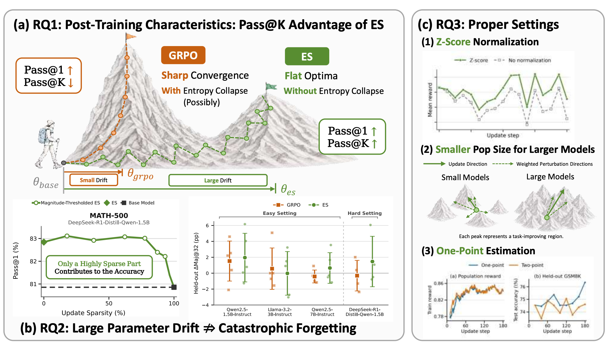
Figure 1 把机制差异压缩成三块。左上用“尖峰”与“平坦多峰”对照 GRPO 和 ES：GRPO 的小漂移可以把概率集中到少数高峰，Pass@1 上升但大 K 覆盖可能下降；ES 的 population 参数搜索走得更远，却可能保留多个任务改善区域。左下不是声称所有参数都重要，而是显示随着 update sparsity 增加，保留少数大幅更新仍能维持性能，并用 held-out Maj@32 提醒“几何漂移不等于灾难性遗忘”。右侧则给出三个操作结论：reward z-score、模型变大后可用更小 population、推理 rollout 下 one-point 未必输给 two-point。图中每块对应后续一条 RQ，它不是实验结果的替代，而是读论文时的信号流地图。
2.2 RQ1：从参数扰动的策略差异到 Pass@K 覆盖
理论链的第一步是把参数扰动转成策略分布差异。对固定提示 $x$，局部 Fisher information 描述小参数位移造成的 KL；N 个独立扰动策略相对其平均 mixture 的 policy-level Jensen-Shannon diversity，在 $\sigma$ 很小时满足：
符号解释：$I_x(\theta)$ 是提示条件 Fisher information，$\operatorname{tr}I_x$ 衡量局部策略对参数扰动的总体敏感度，$1-1/N$ 是有限 population 修正。这个式子只在足够平滑、局部共同 support 等条件下成立；它说明扰动会制造跨成员策略差异，但还没说明差异与正确答案有关。
第二步把响应分布通过二元 verifier 投影成成功概率 $p_i(x)$。数据处理不等式保证成功空间的 JS 不超过完整策略 JS；更关键的是，若从每个成员各采一次，那么“至少有一次正确”的概率满足：
符号解释：$p_i(x)$ 是成员 $i$ 的正确率，$\bar p(x)$ 是它们的平均正确率。右侧不等式来自几何均值与算术均值关系：在平均成功率相同的前提下，成员成功率越异质，跨成员各采一次越容易让至少一个成员命中。这里的“diversity 有益”是 verifier 投影后的互补性，不是输出越随机越好。
第三步用单调适应度权重形成分析 mixture。若高 reward 成员也确实有更高的提示级成功概率，权重与成功率的协方差为正，加权 mixture 的成功率就高于均匀 population。最后还必须把 mixture 优势迁移到实际中心更新。论文把这一边界写成：
符号解释：$B_w$ 是 reward-weighted mixture 在正确/错误二元空间的分布，$B_{\theta^+}$ 是更新后 center 的分布，$m_K$ 是 mixture 相对初始策略的 Pass@K margin，$J_K$ 是跨提示期望 Pass@K。$K$ 越大，允许的中心迁移误差越严格。因此论文证明的是“异质性有用、reward 对齐且 center transfer 足够好时，ES 可以提高 Pass@K”，不是 ES 必然优于 GRPO 的无条件定理。
2.3 RQ2：参数漂移、幅度阈值与功能稀疏
论文先用相对 L2 距离衡量训练前后 checkpoint 的整体移动：
符号解释：$\theta_0$ 与 $\theta$ 分别是 base 和后训练参数。该指标对所有坐标求和，适合比较几何尺度，却不会区分哪些变化真正影响输出。作者因此对 $\Delta\theta_i=\theta_i-\theta_{0,i}$ 设幅度阈值，并定义：
符号解释：$s_\tau$ 是幅度不超过 $\tau$ 的非零更新占比。构造 magnitude-thresholded checkpoint 时，这些小更新被置零、参数回到 base 值，因此 $s_\tau$ 也就是 update sparsity。若 $s_\tau$ 很高而 Pass@1 几乎不变，可以说任务收益集中于较少的大幅更新；但这是训练后的 post-hoc 功能诊断，不能反推训练前已经知道哪组坐标重要。作者还定位最大更新所在层：ES 的大幅变化主要集中于 LayerNorm 权重和 attention projection，GRPO 的最大变化则集中于 token embedding 与 language-model head。这个观察与二者信号路径相符，但仍是相关性而非机制证明。更稳妥的结论是：全模型距离把大量小幅、可能 reward-irrelevant 的随机游走也累计进去，所以不能单独作为遗忘代理；是否遗忘必须回到 held-out 行为测试。
2.4 RQ3：标准化、扰动尺度、population size 与 one-point estimator
实际训练用八个单卡 vLLM 引擎分配 N 个扰动方向；每个方向从 32-bit seed 和稳定参数名重建高斯张量，原地加上 $\sigma\epsilon_i$，对共享 mini-batch 每题生成一条响应，求平均奖励后撤销扰动。所有方向完成后对奖励 z-score，再以 $\alpha N^{-1}\sum_i z_i\epsilon_i$ 更新每个中心副本。该流程避免保存 backward state，却把成本转为 N 份 autoregressive generation。扰动尺度 $\sigma$ 同时决定搜索半径和平滑程度：过小时，模型只看见很窄邻域，离散 verifier reward 下方向差别不足或快速过拟合；过大时，扰动模型可能离开稳定区域。population size 则控制方向覆盖与估计噪声。论文的经验假设是：较大预训练模型附近可能存在更密的任务改善方向，因此不必用更大的 N 才能采到有效方向；这个解释受实验支持，但还没有一般理论保证。
two-point estimator 常通过比较 $F(\theta+\sigma\epsilon)$ 与 $F(\theta-\sigma\epsilon)$ 抵消共同噪声。然而，数学推理的响应是重新自回归生成的，参数扰动可能在早期 token 就让两条轨迹分叉；若正负扰动评估缺乏足够 covariance，相减会把两份随机性相加。固定监督目标或固定 rollout 重打分时，正负评估高度相关，two-point 能显著降方差；重新生成 GSM8K 响应时，论文只在很小 $\sigma$ 与 common random numbers 下看到局部收益，匹配训练中没有观察到 reward 或 held-out 优势。因此 one-point 更适合本文配置，但这不是对所有可耦合 rollout 系统的普遍结论。
3. 实验结果
3.1 设置、数据与指标口径
Easy Setting 在 Qwen2.5-1.5B-Instruct、Llama-3.2-3B-Instruct、Qwen2.5-7B-Instruct 上用 GSM8K 训练两轮；训练 batch 为 64，ES population 为 32 个方向，GRPO 每组 8 个响应。Hard Setting 使用 DeepSeek-R1-Distill-Qwen-1.5B 和 DeepScaleR 训练一轮，batch 与 group 设置相同。ES 使用 $\sigma=1.5\times10^{-3}$、$\alpha=2.5\times10^{-4}$；Easy/Hard 训练温度分别为 0 和 0.6，GRPO 为 1.0。Easy 与 Hard 最大生成长度分别是 2,048 与 8,192 token。
离线评估每题保留 $M=32$ 个温度 0.6 的响应，并报告 $K\in\{16,32\}$；Easy 另有温度 0 的单次贪心评估。Pass@K 使用无放回估计：
符号解释：$c$ 是 32 个响应中 verifier 判对的数量。Pass@1 等于平均逐响应正确率；Pass@32 等于这 32 次里至少一次答对的问题比例。Maj@K 则先对答案规范化，再对前 K 个响应做确定性多数票。Easy 的 held-out 套件包括 CommonsenseQA、HotpotQA、Countdown、GPQA、MBPP；Hard 的 held-out 套件包括 GPQA、MBPP、CommonsenseQA、Countdown。论文明确这些 held-out 数据都不贡献后训练奖励。
3.2 覆盖率主结果：Pass@1 不是全部
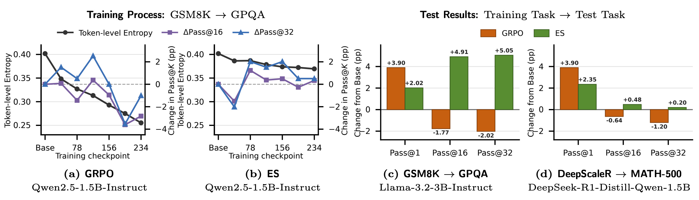
Figure 2 的左两图在 Qwen2.5-1.5B 的 GSM8K 后训练过程中跟踪 held-out GPQA。GRPO 的 token entropy 从约 0.40 持续降至约 0.25，最终 Pass@16 与 Pass@32 均低于 base；ES 的熵大体保持在 0.33-0.40，两个大 K 指标终点高于 base。右两图把差异量化：GSM8K→GPQA 上，GRPO 的 Pass@1 增加 3.90 个百分点，却让 Pass@16/32 分别下降 1.77/2.02；ES 对应增加 2.02、4.91、5.05。DeepScaleR→MATH-500 上，GRPO 为 +3.90、-0.64、-1.20，ES 为 +2.35、+0.48、+0.20。它支持“GRPO 更擅长单次命中、ES 更保留重复采样覆盖”的主张，但只是代表任务对，完整性要看后续表格。
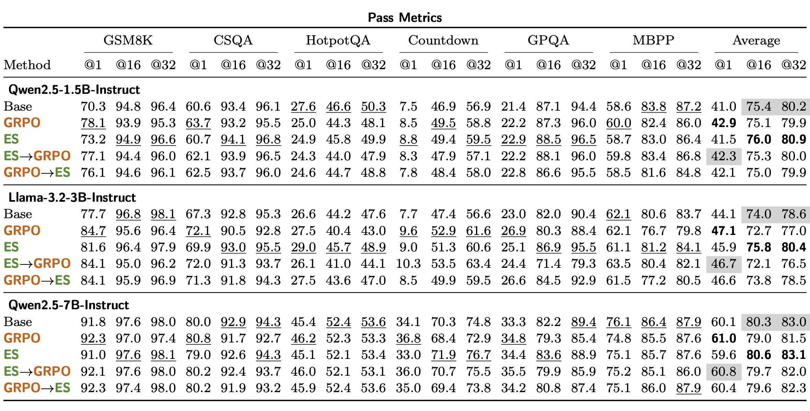
Table 2 覆盖三个模型和 GSM8K、CSQA、HotpotQA、Countdown、GPQA、MBPP 六类任务。看每个模型最右侧平均值，Qwen2.5-1.5B 的 Base/GRPO/ES 为 41.0/42.9/41.5（Pass@1）、75.4/75.1/76.0（Pass@16）、80.2/79.9/80.9（Pass@32）；Llama-3.2-3B 为 44.1/47.1/45.9、74.0/72.7/75.8、78.6/77.0/80.4；Qwen2.5-7B 为 60.1/61.0/59.6、80.3/79.0/80.6、83.0/81.5/83.1。GRPO 三次都提高平均 Pass@1，却三次都降低大 K；ES 三次都超过 GRPO 的 Pass@16/32，并大体保持或提高 base 覆盖，但 7B 的平均 Pass@1 低 0.5 个百分点。这个例外提醒我们，论文结论应读成总体覆盖趋势，而不是逐模型逐指标全胜。
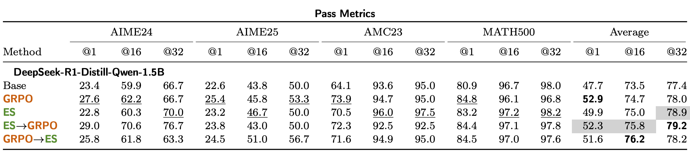
Table 3 在 DeepSeek-R1-Distill-Qwen-1.5B 上汇总 AIME24、AIME25、AMC23、MATH-500。平均列中 Base 为 47.7/73.5/77.4，GRPO 为 52.9/74.7/78.0，ES 为 49.9/75.0/78.9。也就是说，GRPO 的 Pass@1 优势最大，ES 的 Pass@16/32 更高。顺序组合进一步改变折中：ES→GRPO 达到 52.3/75.8/79.2，保留接近 GRPO 的 Pass@1 并取得最高 Pass@32；GRPO→ES 达到 51.6/76.2/78.2，拿到最高 Pass@16，但 Pass@32 不如 ES→GRPO。AIME 样本较少、单项数值会抖动，所以比单格胜负更可靠的是平均列和不同 K 的一致方向。
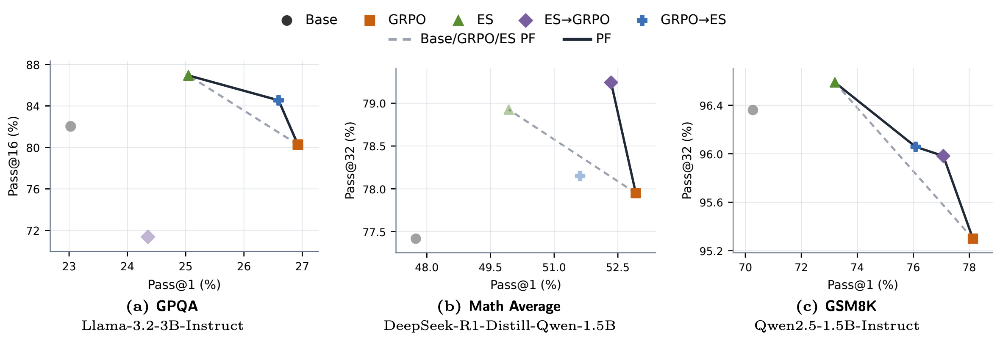
Figure 3 将三个代表设置放到二维 Pareto 平面：横轴 Pass@1，纵轴分别是 Pass@16 或 Pass@32，右上越好。灰色虚线只用 Base、GRPO、ES 构成参考前沿；加入 ES→GRPO 与 GRPO→ES 后，三幅图都出现新的非支配点。GPQA 上 GRPO 的横轴领先但纵轴明显落后，GRPO→ES 把点推向更均衡位置；Hard math average 上 ES→GRPO 位于更高 Pass@32 端；GSM8K 上顺序组合补齐中间折中。该图说明“两阶段各做一半更新”能利用互补性，却也暴露训练顺序依赖：先用哪种优化器并非可以互换，最终点由任务、K 和阶段次序共同决定。淡色 marker 表示在对应比较中被支配的方案，因此图的结论来自二维排序，不代表点间差距已通过显著性检验。
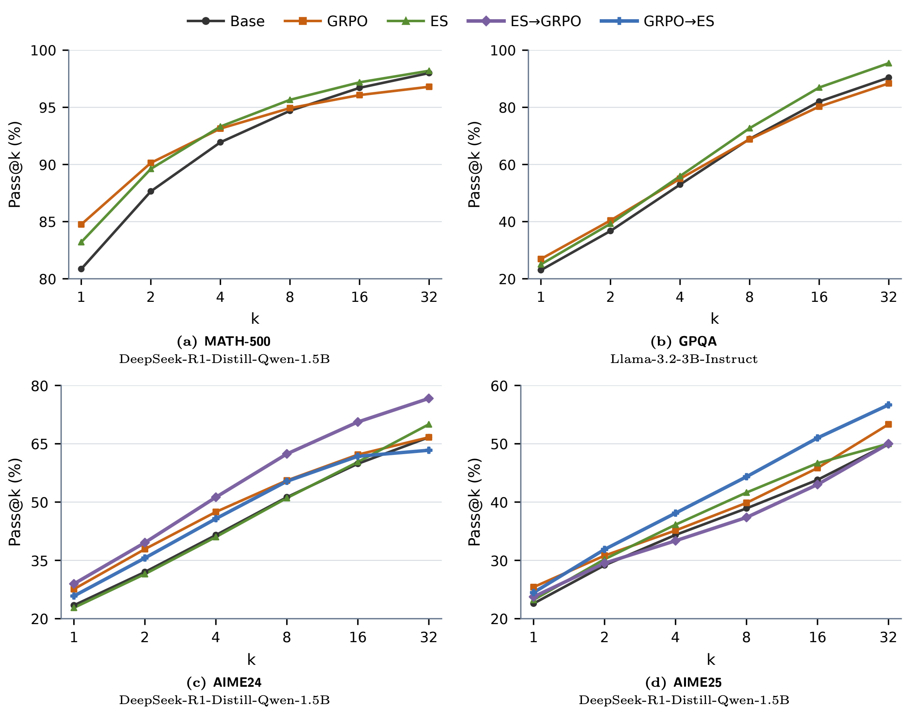
Figure 6 补足 Pareto 图只看一个大 K 端点的不足。在 MATH-500 与 GPQA 两个单方法面板里，K=1 时 GRPO 位于 ES 上方；随着 K 增大，ES 曲线反超，并始终高于 base，说明差异不是只发生在 K=16 或 32 的偶然端点。AIME24 上 ES→GRPO 从 K=1 到 32 基本保持最强，AIME25 则由 GRPO→ES 在 K≥2 后领先。曲线一方面支持“ES 的收益更偏覆盖”，另一方面也说明 sequential composition 不是固定配方：AIME24/25 对阶段次序给出相反偏好，工程应用必须提前选择关心的采样预算与任务分布。四幅图的纵轴范围并不相同，不能按视觉斜率直接比较任务难度；应读取每个面板自己的刻度与曲线交叉位置。
3.3 漂移、功能稀疏与 held-out 能力
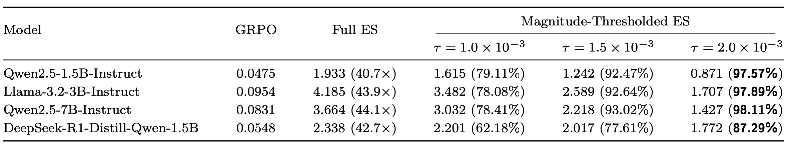
Table 4 首先确认 ES 确实走得远：四个模型中 Full ES 的相对 L2 距离分别是 1.933、4.185、3.664、2.338（表中均再乘 $10^{-2}$），是匹配 GRPO 的 40.7、43.9、44.1、42.7 倍。但大量变化很小。在 $\tau=1.5\times10^{-3}$ 时，小幅非零更新已占 92.47%、92.64%、93.02%，DeepSeek Hard 设置为 77.61%；换言之，只剩约 7%-22.4% 的更新幅度更大。距离仍随着阈值升高而下降，说明 L2 也并非完全由微小坐标构成。括号中的百分比是非零坐标里被阈值覆盖的比例，不是参数总量占比；Full ES 括号则是相对 GRPO 的距离倍数，两种括号口径不能混读。这个表只建立“幅度稀疏”，是否具有功能稀疏还要看删去小更新后的性能。
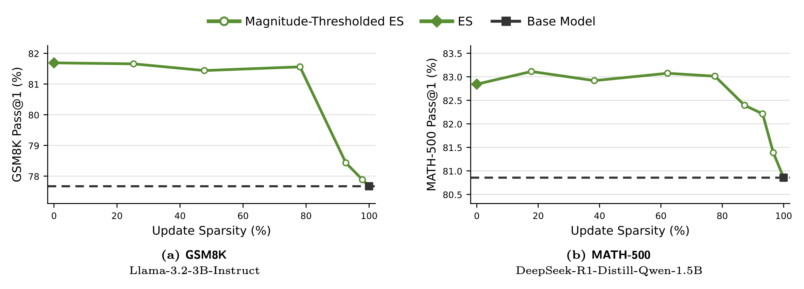
Figure 4 对 Llama-3.2-3B 的 GSM8K 和 DeepSeek-1.5B 的 MATH-500 做阈值化。两条曲线在约 78% sparsity 前几乎贴近 Full ES：完整附录数值中，Qwen1.5B、Llama3B、Qwen7B、DeepSeek1.5B 在相近稀疏度的 Pass@1 相对 Full ES 分别变化 -0.351、-0.130、+0.488、+0.169 个百分点。只有阈值继续吞掉更大更新、sparsity 接近 90%-100% 时，部分模型才明显下滑到 base endpoint。因而任务收益并不均匀分布在所有非零坐标上。需要注意，曲线是训练后把参数回退到 base 的诊断，不代表训练时只更新 20% 参数就必然得到同一结果。
作者进一步报告最大 ES 更新主要落在 LayerNorm 与 attention projection。Llama-3.2-3B 的最大幅度 0.01171875，九个最大坐标中五个是 input-LayerNorm；DeepSeek-1.5B 的最大幅度 0.015625，144 个最大坐标中 117 个是 LayerNorm、24 个是 attention projection bias。GRPO 的最大幅度分别小 48 倍和 16 倍，且 top-100 集中于 token embedding 或 LM head。这是有启发性的层级差异，但还没有通过层级因果干预证明“归一化/注意力就是 ES coverage 的来源”。
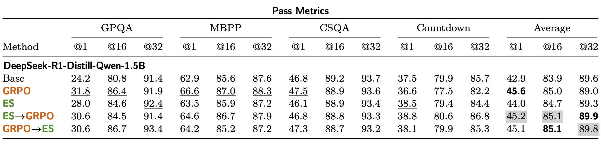
Table 5 检验 DeepScaleR 数学后训练是否破坏非训练任务。四任务平均的 Base/GRPO/ES 为 42.9/45.6/44.0（Pass@1）、83.9/85.0/84.7（Pass@16）、89.6/89.0/89.3（Pass@32）。ES 并没有在每个平均指标上超过 GRPO 或 base：Pass@1/16 略低于 GRPO，Pass@32 高于 GRPO却低于 base 0.3。顺序组合的平均 Pass@32 达 89.9 与 89.8。附录多数投票中，ES 的平均 Maj@16/32 为 58.6/59.7，高于 Base 的 57.0/58.2 和 GRPO 的 56.9/57.9。更准确的结论是“大漂移没有在这套 held-out 测试上造成一致、广泛崩塌”，而不是“ES 完全不会遗忘”。个别任务下降和长期连续适配仍需单独验证。
Easy Setting 的附录汇总也呈现类似结构。Qwen1.5B 的 ES held-out 平均变化为 Pass@1/16/32 的 +0.0/+0.6/+0.8 和 Maj@16/32 的 +1.0/+2.0；Llama3B 为 +1.4/+2.2/+2.2、-0.0/-0.0；Qwen7B 为 -0.5/+0.3/+0.2、+0.3/+0.7。三模型再平均后 ES 的五项变化方向都为正，而 GRPO 的 Pass@16/32 为负。这反驳“只要参数距离大就必然广泛遗忘”的简单因果叙事，但不能排除训练集过小、任务不匹配或更长训练导致的遗忘。
3.4 训练设计：标准化、population size 与估计器
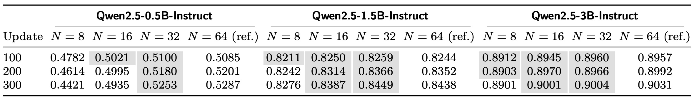
Table 6 用 Qwen2.5-0.5B、1.5B、3B 比较 $N\in\{8,16,32,64\}$。在 update 300，0.5B 的 N=8/16/32/64 奖励为 0.4421/0.4935/0.5253/0.5287，只有 N=32 距 N=64 小于 0.01；1.5B 为 0.8276/0.8387/0.8449/0.8438，N=16 已相差 0.0051；3B 为 0.8901/0.9001/0.9004/0.9031，N=16 相差 0.0030。这里的判断阈值是“与 N=64 reference 差不超过 0.01”，不是统计显著性检验。数据支持模型变大后较少方向也能接近 reference，但只覆盖三个 Qwen 尺度和 GSM8K，不足以给出跨架构的 population scaling law。
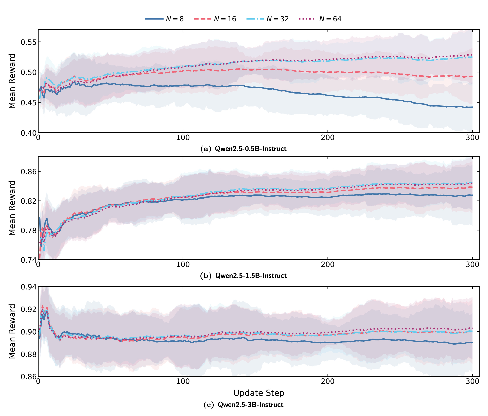
Figure 5 将终点表扩展为 300 次更新轨迹，阴影是 raw reward 减去平滑曲线后的局部标准差，而不是不同随机种子的置信区间。0.5B 上 N=8 和 N=16 在中后期明显转为下降，N=32/64 继续改善；1.5B 的 N=16/32/64 很快聚在相近区域，3B 的三条较大 N 曲线也持续接近。因而“较大模型可用较小 population”不仅来自最后一个数字，还来自稳定性形态。不过每种设置似乎没有展示多 seed 独立重复，阴影不能替代跨运行误差条；N=8 在大模型上是否可用，也仍不成立。
reward normalization 的消融显示，population 内 z-score 在初始化后的匹配 one-point 训练中持续取得更高平均奖励。其直觉是只保留同一轮 population 内的相对好坏，避免不同 batch 的奖励尺度直接放大或缩小更新。扰动尺度则需要在局部探索与训练崩塌之间选取；论文报告的主实验统一采用 $1.5\times10^{-3}$，尚未给出足够广的跨模型自动调参规则。
one-point 与 two-point 的局部诊断给出了更细边界。在 $\sigma=10^{-3}$、common seed 的 GSM8K regenerated rollout 上，正负差分方差比 $\kappa_{\mathrm{pair}}=1.9870$，大于 1 表示相减反而增大原始标量方差；independent seed 更高达 2.7847。固定 SST-2 监督交叉熵时该比值是 0.1557，固定 rollout 的 mean log-probability、policy loss、GRPO surrogate 分别约 0.0285、0.0194、0.0007，显示高 covariance 时差分确实有效。GSM8K 只有 $\sigma=10^{-4}$ 且 common seed 时降到 0.8194；更大尺度不再受益。匹配三轮训练也未见 two-point 的 reward 或 held-out 优势，所以作者在当前随机生成环境选择 one-point，是基于 coupling 失败而非否定 two-point ZO 本身。
4. 总结
4.1 我的判断
这篇论文最扎实的贡献，是把“推理能力变强”拆成单次命中和重复采样覆盖，并用理论与实验解释 ES 为什么可能沿着后一维度获益。理论链没有停在泛化的“population 更 diverse”，而是先定义跨扰动策略 JS，再投影到 verifier 成功概率，用跨成员至少一次成功的概率比较建立 coverage，最后明确 reward-weighted mixture 与 center policy 之间还存在 transfer error。这个限定让结论可证伪：如果成员差异与正确性无关、奖励权重不对齐或中心更新没有保留 mixture margin，ES 的 population diversity 就不会自动变成部署模型的 Pass@K。
实验证据也呈现稳定但非绝对的模式。GRPO 往往拿到更高 Pass@1，却在 Easy 三模型的平均 Pass@16/32 上低于 base；ES 对大 K 更稳，顺序组合能增加 Pareto 非支配点。与此同时，Qwen7B 的 ES 平均 Pass@1 略低于 base，Hard held-out 的 ES 平均 Pass@32 也没有超过 base，说明“broader coverage than GRPO”比“ES 全面更强”准确得多。参数侧的阈值实验有效削弱了“L2 漂移必然导致遗忘”的说法，但还没有建立哪些层或坐标因果地产生 coverage。
4.2 工程启发与复现建议
如果目标系统允许 best-of-N、自一致性或 verifier reranking，评估时应同时画 Pass@1 到 Pass@K profile，而不是只报 greedy accuracy。GRPO 与 ES 的顺序组合值得作为预算内 baseline，但应先确定服务端真实 K；AIME24/25 已显示相反次序可能胜出。复现 ES 时必须把 population forward count、生成 token 数、卡数、wall-clock 与峰值显存一起报告，否则“memory-efficient”容易掩盖总计算量。z-score、$\sigma$、$\alpha$ 和 N 需要联合控制，不能把本文 $1.5\times10^{-3}$ 与 N=32 机械迁移到其他架构。
功能稀疏还提供一条潜在工程路线：训练后可用幅度阈值做快速诊断，确认收益是否集中，再探索结构化稀疏或低秩限制。但当前证据只支持 post-hoc 回退，不支持直接把 80% 坐标冻结后仍得到同一训练轨迹。对于 two-point estimator，也应先测正负 rollout 的 reward covariance；若自回归路径很快分叉，成对评估可能用双倍 rollout 换来更高方差。
4.3 局限与后续跟进
主要局限至少有六点：
- 理论依赖局部平滑、共同 support、正 reward-success 相关和足够小的 center-transfer error，只给充分条件。
- 训练任务集中在 GSM8K 与 DeepScaleR 数学推理，跨代码、工具调用、开放式 agent 和多模态任务的外推未验证。
- held-out 结论来自有限模型、预算和任务；它能否延续到多阶段 continual learning 仍未知，不能据此宣称 ES 不会遗忘。
- magnitude thresholding 是训练后诊断，不会自动减少训练时 N 个全参数扰动和 rollout 成本。
- population scaling 只覆盖三个 Qwen 尺度和单一训练任务，且阴影主要反映轨迹内波动，不是多 seed 不确定性。
- 论文是 2026 年 8 月 27 日提交的预印本；Countdown、AMC23、MATH-500 的数据分发页还存在未声明许可证的复现边界。
后续最值得做四件事：第一，在连续多任务后训练中同步跟踪 Pass@K、held-out accuracy、参数距离和层级功能消融，检验“大漂移不等于遗忘”是否跨阶段成立；第二，把幅度阈值或层级重要性引入训练过程，比较能否减少有效搜索维度而不损失 coverage；第三，在代码生成、工具调用和长轨迹 agent 中测 verifier-projected JS 与真实成功覆盖的关系；第四，用等 wall-clock、等 FLOPs、等总 rollout budget 比较 ES、GRPO 和顺序组合。只有这些控制补齐后，才能判断 ES 的优势究竟来自优化几何、探索分布，还是额外前向样本预算。